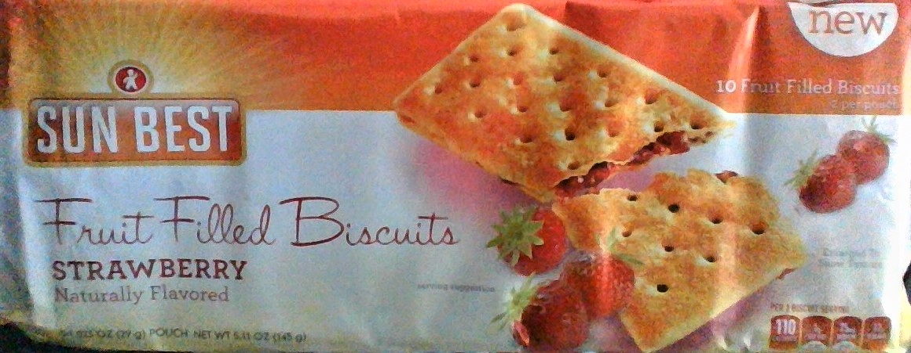
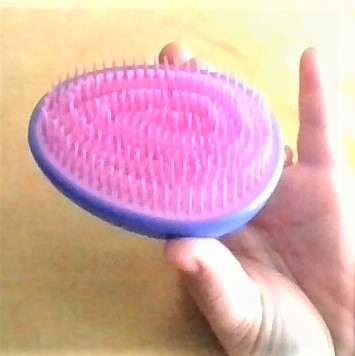

Sun Best Fiber Boost Chocolate Brownie Bar

These brownies are surprisingly tasty rivaling Fiber One and other local health food brands. The value at this price point might not be great as you only get 3 bars at 0.85oz each, but as far as grocery items found at the Dollar Tree, this is one of my favorites.
Sun Best Fruit-Filled Biscuits

These are unlike any snack I've had natively, but they are basically jam-filled crackers. They are sweet, but the cracker part is not overly sweet. It's a little less sweet-tasting than an animal cracker. The dry cracker and chewy jam filling are an interesting texture combination. I throw these in my lunch bag or eat them as a breakfast appetizer.
Detangling Hair Brush

Detangling brushes are a trendy hair care item, but the soft-bristled brushes can be rather expensive at most stores because they are "new" and for a specific purpose. I was able to find multiple sizes and styles at my local Dollar Tree, but they sold out quickly. I bought this small one to throw in my car.
Planners/Calendars
I don't necessarily recommend the Dollar Tree for a decorative wall calendar, but I do recommend it for a calendar or planner you're bringing to work or school that will be scribbled in, beat up, torn out, and disposed of. Why pay more? My job requires cataloging events that affect my productivity, so my Dollar Tree planner is an expensive way to keep an organized log of those events.
Writing Utensils/Office Supplies
Many people hesitate to pick up their office supplies from the Dollar Tree for fear of quality. Unless you're concerned about technical precision and accuracy (for professional reasons), the supplies you'll find at the Dollar Tree are more than sufficient. You will find trendy items like paper flags, clips, cute character glue sticks, and pens and pencils of every style and color. My favorite recent finds pictured are pastel highlighters and some metallic ink metal-bodied click pens. If you are worried that you'll take home pens that won't write, fear not. While Dollar Tree doesn't do returns per se, you may swap the dysfunctional item out for any other item in the store!